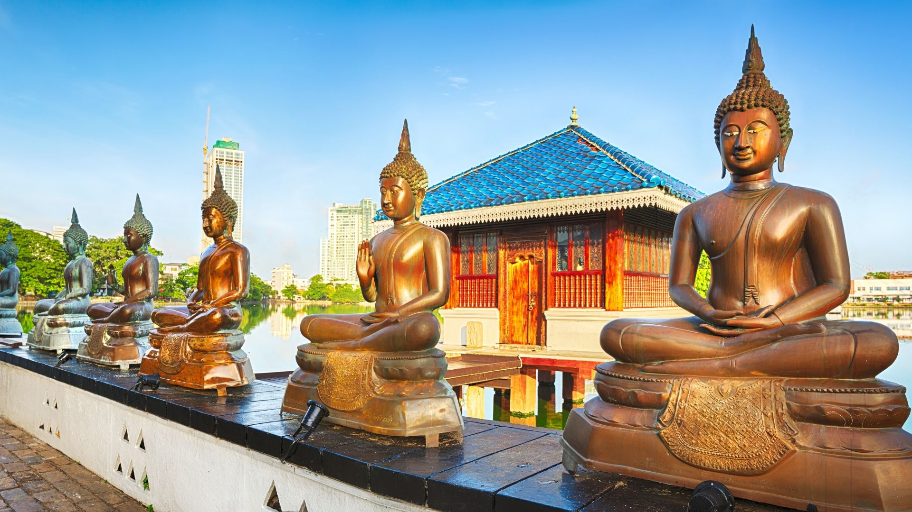

The Southern Province of Sri Lanka is renowned for its beautiful beaches, rich history, and vibrant culture. From the colonial architecture of Galle to the pristine beaches of Mirissa and the wildlife of Yala National Park, this region offers diverse experiences for every traveler.
Top 5 Places to Visit
- Galle Fort - A UNESCO World Heritage Site with well-preserved colonial architecture.
- Yala National Park - Famous for its leopard population and diverse wildlife.
- Mirissa Beach - A beautiful beach known for whale watching and surfing.
- Unawatuna Beach - A popular beach destination with calm waters and coral reefs.
- Hikkaduwa Beach - Famous for its coral sanctuary and vibrant nightlife.
Top 5 Hotels
- Jetwing Lighthouse - A luxury hotel in Galle designed by Geoffrey Bawa.
- Cinnamon Bey Beruwala - A beachfront resort offering luxury accommodations.
- Anantara Peace Haven Tangalle - A luxury resort set on a secluded beach.
- Heritance Ahungalla - A unique hotel with stunning architecture and beach access.
- Tri Lanka - An eco-luxury resort overlooking Koggala Lake.
Galle Fort
Explore the historic Dutch fort with its charming streets, boutiques, and cafes.
Yala National Park
Go on a safari to spot leopards, elephants, and diverse bird species.

Mirissa Beach
Relax on this beautiful beach or go whale watching in the deep blue waters.
Uva Province is known for its scenic beauty, tea plantations, and cool climate. Located in the southeastern part of the hill country, it offers breathtaking landscapes, waterfalls, and opportunities for adventure activities like hiking and trekking.
Top 5 Places to Visit
- Ella - A picturesque hill town with stunning views and hiking trails.
- Diyaluma Falls - Sri Lanka's second highest waterfall, perfect for hiking and swimming.
- Badulla - The capital of Uva Province with historical and cultural significance.
- Haputale - A hill station offering panoramic views of the surrounding valleys.
- Lipton's Seat - A viewpoint where Sir Thomas Lipton monitored his tea plantations.
Top 5 Hotels
- 98 Acres Resort & Spa - A luxury eco-resort in Ella with stunning views.
- Ella Jungle Resort - A unique accommodation nestled in the jungle near Ella.
- Grand Ella Hotel - A comfortable hotel with beautiful mountain views.
- Haputale Bungalow - A colonial-era bungalow offering a vintage experience.
- Tea Country Inn - A cozy hotel surrounded by tea plantations in Haputale.
Ella Rock
Hike to the top of Ella Rock for breathtaking views of the surrounding landscape.
Diyaluma Falls
Visit Sri Lanka's second highest waterfall and enjoy natural pools at the top.
Lipton's Seat
Enjoy panoramic views of tea plantations from this famous viewpoint.
The Western Province is the commercial and administrative hub of Sri Lanka, home to the capital Colombo. It offers a mix of urban attractions, beautiful beaches, and cultural sites. From modern shopping malls to ancient temples, this province has something for everyone.
Top 5 Places to Visit
- Colombo - The commercial capital with a mix of modern and colonial architecture.
- Mount Lavinia Beach - A popular beach near Colombo with a famous hotel.
- Kelaniya Raja Maha Vihara - An ancient Buddhist temple with historical significance.
- Gangaramaya Temple - A prominent temple in Colombo with a museum and library.
- Negombo - A coastal city known for its fishing industry and beach.
Top 5 Hotels
- Galle Face Hotel - A historic colonial-era hotel in Colombo.
- Shangri-La Colombo - A luxury hotel offering panoramic views of the Indian Ocean.
- Mount Lavinia Hotel - A heritage hotel with direct beach access.
- Cinnamon Grand Colombo - A luxury hotel in the heart of Colombo.
- Jetwing Beach - A beachfront hotel in Negombo with modern amenities.
Colombo City
Explore the vibrant capital with its mix of modern and colonial architecture.
Mount Lavinia Beach
Relax on this popular beach just a short drive from Colombo city center.

Gangaramaya Temple
Visit this important Buddhist temple with its unique architecture and museum.